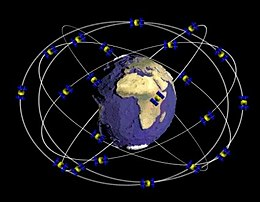

SATELLITI
I satelliti sono corpi che orbitano attorno a un pianeta o a un altro corpo celeste, svolgendo un ruolo fondamentale nel sistema planetario e nelle tecnologie spaziali moderne. Si dividono in due categorie principali: satelliti naturali e satelliti artificiali.
Satelliti naturali
I satelliti naturali sono corpi celesti che orbitano attorno a un pianeta o a un altro corpo maggiore, come un pianeta nano o un asteroide. Questi satelliti, comunemente noti come lune, sono presenti in gran parte del sistema solare e variano notevolmente in dimensioni, composizione e caratteristiche fisiche.
Caratteristiche dei Satelliti Naturali
I satelliti naturali, comunemente noti come lune, sono corpi celesti che orbitano naturalmente attorno a pianeti o altri corpi maggiori. Questi satelliti possono variare notevolmente in dimensioni, composizione e caratteristiche superficiali. La nostra Luna, ad esempio, ha un diametro di circa 3.474 chilometri ed è caratterizzata da vaste pianure basaltiche, crateri da impatto e montagne. I satelliti naturali possono essere composti prevalentemente da roccia, ghiaccio o una combinazione di entrambi. Alcuni satelliti, come Europa, una delle lune di Giove, possiedono una crosta ghiacciata che potrebbe nascondere un oceano di acqua liquida al di sotto, sollevando la possibilità di condizioni favorevoli alla vita.
Varietà e Composizione
La composizione dei satelliti naturali può includere roccia, ghiaccio o una combinazione di entrambi. Alcuni satelliti, come Europa, una delle lune di Giove, possiedono superfici ghiacciate che potrebbero nascondere oceani di acqua liquida al di sotto, offrendo potenziali condizioni favorevoli alla vita. Altri, come Io, un'altra luna di Giove, sono geologicamente attivi con vulcani che eruttano regolarmente. La dimensione dei satelliti naturali varia enormemente, dai piccoli satelliti catturati dai campi gravitazionali planetari a enormi corpi come Ganimede, la più grande luna di Giove, che è più grande del pianeta Mercurio.
Importanza Scientifica
I satelliti naturali sono di grande interesse per gli scienziati perché studiarli offre importanti informazioni sulla formazione e l'evoluzione dei sistemi planetari. Missioni spaziali come Galileo su Giove, Cassini su Saturno e New Horizons su Plutone hanno rivelato dettagli sorprendenti su questi corpi celesti, inclusa la loro geologia, atmosfera e possibili attività geologiche. Questi dati aiutano a comprendere i processi che hanno modellato il nostro sistema solare e possono offrire indizi sulla possibilità di vita extraterrestre. Inoltre, alcuni satelliti, come la Luna della Terra, sono considerati obiettivi strategici per future missioni di esplorazione spaziale e potenziali colonizzazioni, grazie alla loro vicinanza e alle risorse che potrebbero offrire.
Satelliti artificiali
I satelliti artificiali sono dispositivi creati dall'uomo e lanciati nello spazio per orbitare attorno alla Terra o ad altri corpi celesti. Questi satelliti svolgono una vasta gamma di funzioni essenziali per la vita moderna e la ricerca scientifica. Possono essere utilizzati per comunicazioni, navigazione, osservazione terrestre, ricerca scientifica e monitoraggio ambientale. Questi dispositivi sofisticati rappresentano un elemento cruciale delle infrastrutture moderne e sono fondamentali per il progresso tecnologico e scientifico, vengono divisi in quattro grandi categorie: Satelliti per comunicazioni, Satelliti per navigazione, Satelliti per l'osservazione terrestre e Satelliti scientifici.
Funzione e Importanza dei Satelliti per Comunicazioni
I satelliti per comunicazioni sono dispositivi artificiali progettati per trasmettere segnali televisivi, radiofonici, telefonici e dati internet. Essi svolgono un ruolo fondamentale nel collegare diverse parti del mondo, permettendo la trasmissione di informazioni su grandi distanze con una velocità ed efficienza che non sarebbe possibile con le sole infrastrutture terrestri. Questi satelliti facilitano la comunicazione globale, supportando servizi essenziali come le trasmissioni televisive internazionali, le reti telefoniche e l'accesso a internet, specialmente in aree remote o difficilmente raggiungibili con i mezzi tradizionali.
Tecnologia e Operazioni dei Satelliti per Comunicazioni
I satelliti per comunicazioni sono generalmente posizionati in orbita geostazionaria (GEO), a circa 35.786 chilometri sopra l'equatore. In questa posizione, il satellite orbita alla stessa velocità di rotazione della Terra, rimanendo fisso sopra un punto specifico del pianeta. Questo permette una copertura continua e stabile per le trasmissioni. I satelliti sono equipaggiati con trasponder, dispositivi che ricevono, amplificano e ritrasmettono i segnali su diverse frequenze. Le antenne paraboliche sulla Terra puntano verso questi satelliti per inviare e ricevere dati, garantendo una comunicazione costante e affidabile.
Applicazioni e Benefici dei Satelliti per Comunicazioni
I satelliti per comunicazioni offrono una vasta gamma di applicazioni, migliorando notevolmente la connettività globale. Essi sono essenziali per la diffusione di programmi televisivi e radiofonici, permettendo la trasmissione di contenuti a livello internazionale. Inoltre, supportano le reti di telefonia mobile, consentendo chiamate e trasmissioni di dati anche in aree rurali o isolate. Un'altra applicazione cruciale è l'accesso a internet via satellite, che offre connettività a comunità remote, navi in mare aperto e aerei in volo. I satelliti per comunicazioni sono anche vitali per le operazioni di emergenza e soccorso, garantendo che le squadre di intervento possano comunicare in situazioni critiche, indipendentemente dall'infrastruttura terrestre disponibile. Grazie a questi satelliti, il mondo è più connesso, con un accesso più ampio e veloce alle informazioni e ai servizi di comunicazione.
Funzione e Principio di Funzionamento dei Satelliti per Navigazione
I satelliti per navigazione sono dispositivi artificiali progettati per fornire informazioni precise sulla posizione e sul tempo a utenti situati ovunque sulla Terra. Il sistema più noto è il Global Positioning System (GPS), originariamente sviluppato dal Dipartimento della Difesa degli Stati Uniti. Questi satelliti emettono segnali radio che contengono dati sulla posizione del satellite e l'orario esatto del segnale. Ricevitori GPS sulla Terra captano questi segnali da almeno quattro satelliti e utilizzano la trilaterazione per calcolare la propria posizione tridimensionale (latitudine, longitudine e altitudine) e il tempo. Questa tecnologia è diventata essenziale per una vasta gamma di applicazioni civili e militari.
Orbite e Costellazioni di Satelliti per Navigazione
I satelliti per navigazione sono generalmente posizionati in orbite terrestri medie (MEO), situate tra 20.000 e 22.000 chilometri sopra la superficie terrestre. La costellazione GPS, ad esempio, consiste in almeno 24 satelliti operativi che garantiscono una copertura globale continua. Altri sistemi di navigazione satellitare includono il GLONASS russo, il Galileo europeo e il BeiDou cinese. Questi sistemi funzionano in modo simile, con costellazioni di satelliti che forniscono una copertura globale o regionale. L'orbita MEO è scelta perché permette ai satelliti di coprire vaste aree della Terra con un numero relativamente ridotto di satelliti, mantenendo al contempo un'accuratezza elevata.
Applicazioni e Impatti dei Satelliti per Navigazione
I satelliti per navigazione hanno rivoluzionato molti settori, offrendo vantaggi significativi in termini di precisione e affidabilità. Nei trasporti, i sistemi di navigazione satellitare sono fondamentali per l'avionica, la navigazione marittima e la gestione delle flotte terrestri, migliorando la sicurezza e l'efficienza. In ambito civile, la navigazione satellitare è utilizzata per le mappe e le applicazioni di localizzazione sugli smartphone, facilitando spostamenti e attività quotidiane. Anche l'agricoltura di precisione beneficia di questi sistemi, permettendo agli agricoltori di ottimizzare l'uso di risorse come acqua e fertilizzanti. Inoltre, i satelliti per navigazione sono cruciali per le operazioni di emergenza e soccorso, fornendo coordinate precise per il dispiegamento rapido delle squadre di intervento. La loro importanza si estende anche al settore scientifico, dove vengono utilizzati per il monitoraggio dei movimenti tettonici e altre applicazioni geofisiche.
Funzione e Importanza dei Satelliti per Osservazione Terrestre
I satelliti per osservazione terrestre sono dispositivi artificiali progettati per monitorare e raccogliere dati sulla superficie e l'atmosfera del nostro pianeta. Questi satelliti utilizzano una varietà di strumenti sensoriali, tra cui telecamere ad alta risoluzione, radar, sensori a infrarossi e spettrometri, per acquisire immagini e dati in diverse bande dello spettro elettromagnetico. Le informazioni raccolte dai satelliti per osservazione terrestre sono cruciali per una vasta gamma di applicazioni, tra cui la meteorologia, la gestione delle risorse naturali, l'agricoltura di precisione, la cartografia, il monitoraggio ambientale e la risposta ai disastri naturali.
Orbite e Tecnologie Utilizzate dei Satelliti per Osservazione Terrestre
I satelliti per osservazione terrestre operano principalmente in orbite terrestri basse (LEO), situate a un'altitudine compresa tra i 200 e i 1.200 chilometri. Questa posizione permette loro di ottenere immagini dettagliate della superficie terrestre con alta risoluzione. Alcuni satelliti utilizzano orbite polari, che passano sopra i poli della Terra e consentono una copertura globale completa grazie alla rotazione del pianeta. Le tecnologie a bordo di questi satelliti includono radar ad apertura sintetica (SAR) per la mappatura della superficie terrestre indipendentemente dalle condizioni meteorologiche e della luce, e sensori multispettrali per rilevare variazioni nella vegetazione, nelle acque e nei suo
Applicazioni e Benefici dei Satelliti per Osservazione Terrestre
Le applicazioni dei satelliti per osservazione terrestre sono estremamente diversificate e hanno un impatto significativo su molte aree della società. In meteorologia, i dati satellitari migliorano le previsioni del tempo e consentono il monitoraggio in tempo reale dei fenomeni atmosferici, come uragani, tempeste e inondazioni. Nell'agricoltura, i satelliti aiutano a monitorare la salute delle colture, ottimizzare l'uso dell'acqua e dei fertilizzanti, e aumentare la produttività agricola. Per la gestione delle risorse naturali, i satelliti offrono informazioni preziose per il monitoraggio delle foreste, la gestione delle risorse idriche e la valutazione delle riserve minerarie. Inoltre, i satelliti sono fondamentali per la risposta ai disastri naturali, fornendo immagini rapide e dettagliate delle aree colpite, che sono essenziali per le operazioni di soccorso e ricostruzione. Complessivamente, i satelliti per osservazione terrestre sono strumenti indispensabili per la gestione sostenibile del nostro pianeta e il miglioramento della qualità della vita.
Funzione e Obiettivi dei Satelliti Scientifici
I satelliti scientifici sono dispositivi artificiali progettati per condurre esperimenti e raccogliere dati fondamentali per la ricerca spaziale e terrestre. Questi satelliti sono equipaggiati con strumenti avanzati come telescopi, spettrometri, magnetometri e sensori vari, che permettono di studiare fenomeni fisici e biologici nello spazio. Gli obiettivi principali dei satelliti scientifici includono l'osservazione di fenomeni astronomici, la raccolta di dati sul clima e l'ambiente terrestre, lo studio della magnetosfera e la ricerca sulla microgravità. Grazie a questi satelliti, gli scienziati possono acquisire una comprensione più approfondita dell'universo, migliorare i modelli climatici e ambientali e sviluppare nuove tecnologie.
Orbite e Tecnologie Utilizzate dei Satelliti Scientifici
I satelliti scientifici possono essere posizionati in diverse orbite a seconda della loro missione specifica. Alcuni operano in orbite terrestri basse (LEO), come il telescopio spaziale Hubble, che fornisce immagini dettagliate dello spazio profondo senza l'interferenza dell'atmosfera terrestre. Altri satelliti, come i missioni interplanetarie, vengono inviati in orbite ellittiche o su traiettorie che li portano verso altri pianeti o corpi celesti, come nel caso della missione Mars Reconnaissance Orbiter su Marte. Le tecnologie a bordo di questi satelliti includono sensori ottici per la raccolta di immagini ad alta risoluzione, spettrometri per l'analisi chimica e composizionale, e strumenti per la misura dei campi magnetici e delle particelle cariche.
Applicazioni e Scoperte dei Satelliti Scientifici
I satelliti scientifici hanno portato a scoperte rivoluzionarie e applicazioni pratiche in molteplici settori. Le missioni spaziali come il telescopio Hubble hanno ampliato enormemente la nostra comprensione dell'universo, permettendo di osservare galassie lontane, nebulose e buchi neri. I satelliti per l'osservazione terrestre, come quelli del programma Landsat, forniscono dati cruciali per il monitoraggio ambientale, aiutando a rilevare cambiamenti climatici, deforestazione e fenomeni naturali come eruzioni vulcaniche e terremoti. Inoltre, satelliti come la missione Gravity Recovery and Climate Experiment (GRACE) hanno permesso di misurare con precisione le variazioni nella distribuzione della massa terrestre, contribuendo a studi sull'innalzamento del livello del mare e sulla gestione delle risorse idriche. Complessivamente, i satelliti scientifici rappresentano strumenti indispensabili per l'avanzamento della conoscenza umana e il miglioramento delle condizioni di vita sulla Terra.


Le orbite dei satelliti artificiali
Le orbite dei satelliti artificiali sono traiettorie ellittiche o circolari che i satelliti seguono attorno alla Terra o altri corpi celesti. La scelta dell'orbita dipende dalla missione del satellite e dai requisiti specifici delle sue operazioni. Le principali categorie di orbite per i satelliti artificiali sono:
Orbita Terrestre Bassa (LEO): si trova a un'altitudine compresa tra i 160 e i 2.000 chilometri sopra la superficie terrestre. Questa orbita è particolarmente utilizzata per satelliti di osservazione terrestre, telescopi spaziali, satelliti per comunicazioni a breve distanza e la Stazione Spaziale Internazionale (ISS). I satelliti in LEO completano un'orbita attorno alla Terra in circa 90-120 minuti. A questa altitudine, i satelliti possono ottenere immagini dettagliate della superficie terrestre e sono ideali per applicazioni come il monitoraggio ambientale, la sorveglianza e la scienza spaziale.
Orbita Terrestre Media (MEO): si estende da circa 2.000 a 35.786 chilometri sopra la superficie terrestre. Un esempio noto di satelliti in MEO è la costellazione GPS, che opera a circa 20.200 chilometri di altitudine. Questi satelliti sono utilizzati principalmente per la navigazione e la comunicazione globale. In MEO, i satelliti hanno periodi orbitali di circa 2-12 ore. Questa orbita permette una copertura più ampia rispetto a LEO, mantenendo al contempo un'accuratezza elevata per le applicazioni di posizionamento e navigazione.
Orbita Geostazionaria (GEO): si trova a un'altitudine di circa 35.786 chilometri sopra l'equatore. In questa orbita, un satellite orbita attorno alla Terra con una velocità angolare che corrisponde alla rotazione terrestre, permettendogli di rimanere fisso sopra un punto specifico sulla superficie terrestre. Questo rende l'orbita GEO ideale per satelliti per comunicazioni, meteorologici e per il monitoraggio climatico, poiché possono fornire una copertura continua e costante di una vasta area. I satelliti in GEO hanno un periodo orbitale di 24 ore.
Orbite Polari e Sincronizzate col Sole: attraversano i poli nord e sud della Terra, permettendo ai satelliti di coprire l'intera superficie terrestre nel corso di diverse orbite, mentre il pianeta ruota sotto di loro. Questo tipo di orbita è spesso utilizzato per satelliti di osservazione terrestre e per il monitoraggio ambientale. Le orbite sincronizzate col sole sono un tipo specifico di orbite polari in cui il satellite passa sopra la stessa area della Terra alla stessa ora locale ogni giorno. Questo è utile per ottenere immagini coerenti in termini di angolo di illuminazione solare, facilitando il monitoraggio dei cambiamenti nel tempo.
Orbite Ellittiche e Altamente Ellittiche (HEO): hanno una forma allungata, con un punto più vicino alla Terra (perigeo) e uno più lontano (apogeo). Le orbite altamente ellittiche (HEO) vengono utilizzate per missioni che richiedono lunghe osservazioni di specifiche regioni della Terra, come le regioni polari. Queste orbite permettono ai satelliti di trascorrere più tempo sopra una determinata area durante la loro fase di apogeo. 